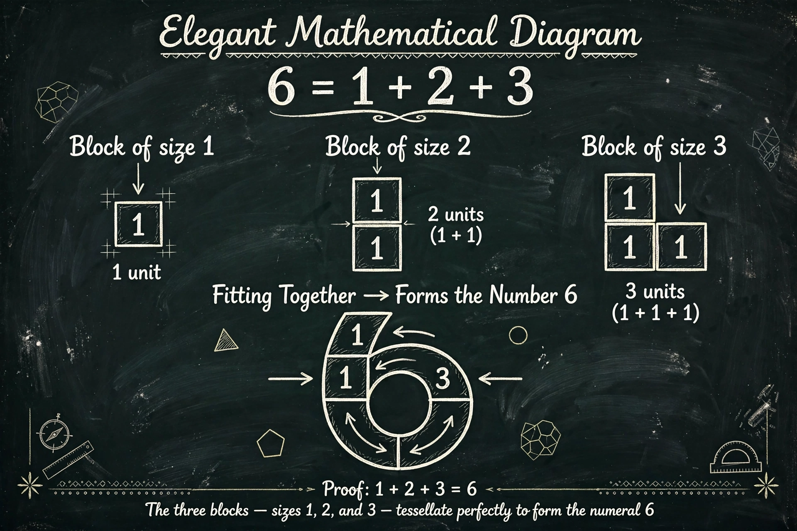

From Wikipedia, the free encyclopedia
| Perfect number | |
|---|---|
| First terms | 6, 28, 496, 8128, 33550336 … |
| Known terms | 52 (as of recent discoveries) |
| Conjectured terms | Infinitely many |
| Related | Mersenne primes, abundant and deficient numbers |
In number theory, a perfect number is a positive integer that is equal to the sum of its proper divisors — that is, the sum of its positive divisors excluding the number itself. Equivalently, a perfect number is a number that is half the sum of all of its positive divisors, i.e. σ(n) = 2n. The first perfect numbers are 6 (= 1 + 2 + 3), 28 (= 1 + 2 + 4 + 7 + 14), 496 and 8128.
Euclid proved in the Elements that if 2p − 1 is prime (a Mersenne prime), then 2p−1(2p − 1) is perfect. Euler proved the converse: every even perfect number has this form. Consequently, finding perfect numbers is equivalent to finding Mersenne primes, a search now carried out largely by the distributed project GIMPS. Whether there are infinitely many remains unknown.
No odd perfect number has ever been found, and it is one of the oldest open problems in mathematics whether any exist. Partial results show that an odd perfect number, if it exists, must exceed 101500, must not be divisible by 3, must have at least 8 distinct prime factors, and must satisfy many other restrictive conditions.
Perfect numbers fascinated ancient mathematicians and theologians: the Pythagoreans studied them, Nicomachus classified numbers as deficient, perfect, or abundant, and Augustine remarked that God created the world in six days because 6 is perfect. The fifth perfect number, 33,550,336, was found in a 15th-century manuscript, and the correspondence with Mersenne primes guided the search into the computer era.
Mersenne prime · Amicable numbers · Abundant number
